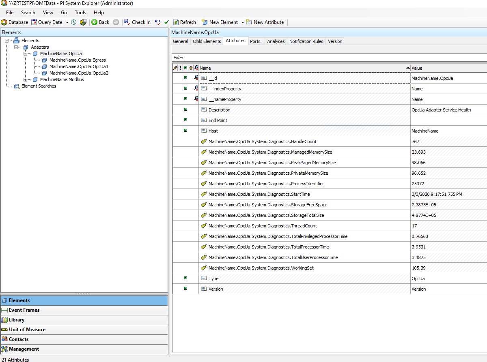

Adapter diagnostics
The adapter and its components produce different kinds of diagnostics data that is sent to all health endpoints. The System_Diagnostics.json file contains a flag that determines whether diagnostics are enabled. You can change this at runtime through REST calls or the EdgeCmd utility. Diagnostics data are collected by default.
To egress diagnostics related data, you have to configure an adapter health endpoint first. See Health endpoint configuration.
Available diagnostics data
Every minute, dynamic data is sent to configured health endpoints.
The following diagnostics data are available:
AF structure
After running diagnostics with a health endpoint configured to a PI server, you can use PI System Explorer to view the diagnostics for a given adapter. The element hierarchy is shown in the following image.

- The Elements root contains a link to an Adapters node. This is the root node for all adapter instances.
- Below Adapters, you will find one or more adapter nodes. Each node's title is defined by the node's corresponding computer name and service name in this format:
{ComputerName}.{ServiceName}. For example, in the following image, MachineName is the computer name and OpcUa is the service name. - To see the System.Diagnostics values, click on an adapter node and set the tab to Attributes. Example values are shown in the image.